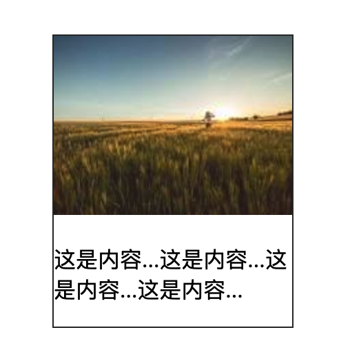

最近看了 《CSS 揭秘》 这本书， 这是一本 CSS 的技巧书， 不建议通过本书学习 CSS 基础。 其中有一些技巧是非常实用的， 但是对于另外的内容， 可能会让我们觉得没有它我们也能很好的工作， 但是这些技巧不是套路， 它们都是启发式， 可以让我们更好的理解某个属性它的本质。
元素数量
经常会遇到要根据元素数量设置样式的需求， 大致思路是通过 :nth-child() 结合兄弟选择器 ~ 达到目的。
单个元素
:only-child 伪类会匹配没有任何兄弟元素的元素， 功能等同于 :first-child:last-child 或者 nth-child(1):nth-last-child(1)， 只不过前者权重较低。
多个元素
- 1.选中第一个元素， 比如
li - 2.通过
:first-child:nth-last-child({n})选中总数量为 n 时， 第一个元素 - 3.通过兄弟选择器
~选择第一个元素后的元素
以 4 个元素为例：
1 | li:first-child:nth-last-child(4), |
数量范围
利用 nth-child() 和 nth-last-child() 的参数可以是表达式的特性， 就可以达到对不同数量范围的元素， 设置不同的样式的目的：
[m, +oo)
以“至少四个元素”时的情况为例：
1 | li:first-child:nth-last-child(4 + n), |
[1, m]
如果是想要选中“开头四个元素”的情况：
1 | li:first-child:nth-last-child(4 - n), |
[m, n]
将上述两种方式结合， 就可以达到选中其中某几个元素的效果。
以“选中第四个到第六个元素”为例：
1 | li:first-child:nth-last-child(4 + n):nth-last-child(6 - n), |
width
min-content & max-content & …
通过 min-content 实现如下效果非常方便：

关于这些属性的功能， 还请查看张鑫旭的 《理解 CSS3 max/min-content 及 fit-content 等 width 值》， 他解释得一定比我更到位。
伪元素
伪元素的功能非常多， 可能没办法很好的归纳， 但是下面两种是不常见的应用场景， 你一定会对两种用途感到惊讶。
扩大点击区域
伪元素可以响应鼠标事件， 所以利用这一特性， 可以通过伪元素来扩大点击区域：
1 | button::before{ |
平行四边形 — 伪元素 + skew()
是的， 利用伪元素还可以既简单又好地实现某些多边形， 比如平行四边形。
利用伪元素实现平行四边形只需要一个 HTML 元素就可以了， 代码如下：
1 | <div class="parallelogram"></div> |
1 | .parallelogram { |
自定义复选框 label + :checked
大多情况下， 原生复选框的样式不能让我们满意， 通过 label + :checked 可以避免写大量 JavaScript 代码的同时， 又很好的实现对复选框的样式自定义。
先看 HTML 代码：
1 | <input type="checkbox" id="awesome" /> |
利用 <label> 可以为 <input> 定义标记的功能， 配合 :checked 伪类：
1 | /* 未选中的样式 */ |